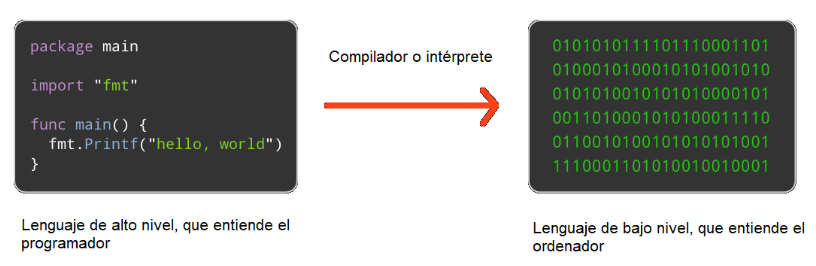
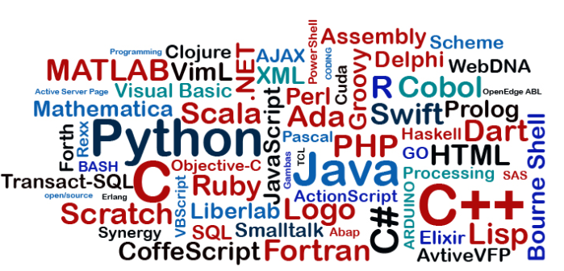
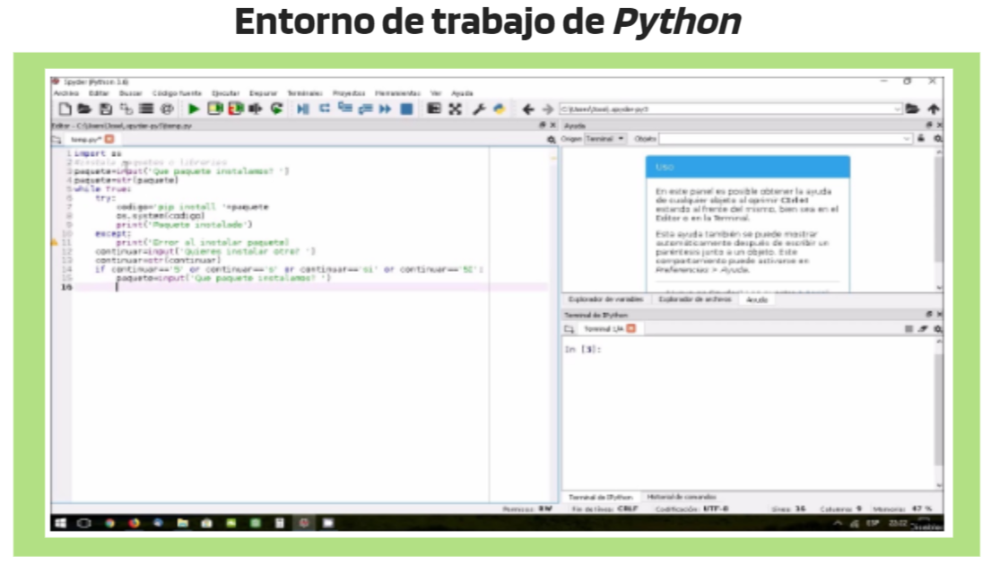
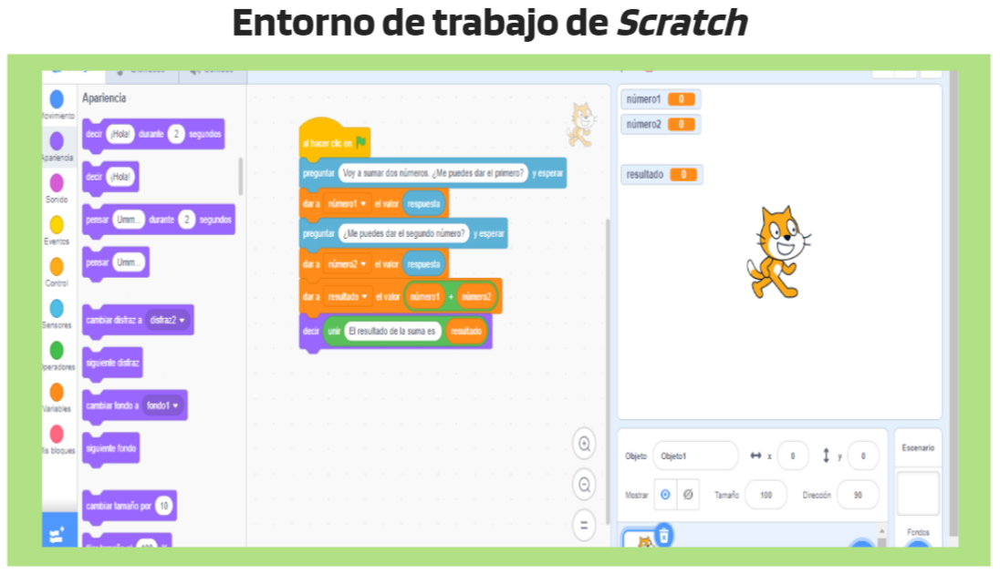

¿Qué es programar?
¿Alguna vez te has parado a pensar en cómo se crean los juegos de ordenador o consola con los que te entretienes? ¿Y las aplicaciones ofimáticas con las que trabajas o la que usas habitualmente en el móvil?
Todos ellos responden, de forma general, al nombre de programas. La parte de la Informática que estudia cómo se crean los programas se denomina programación y la persona que se encarga de crearlos es el programador.
| Programar consiste en proporcionar a una máquina un conjunto de datos y una serie de instrucciones que siguen una secuencia bien definida sobre lo que se debe hacer con esos datos con el objetivo de resolver algún problema. A esta lista de instrucciones se le llama programa. |
Lenguajes de programación
Para transmitir estas instrucciones a ordenadores, móviles y otros dispositivos electrónicos es necesario usar el lenguaje de programación, un lenguaje que entiendan las máquinas.
Podemos encontrar diversas clasificaciones de lenguajes de programación, tantas como nos podamos imaginar, atendiendo a diversas de las características que pueden tener. Nosotros nos vamos a centrar en clasificarlos en lenguaje de bajo nivel y lenguaje de alto nivel.
CÓDIGO BINARIO
El ordenador, en el fondo, sólo entiende un lenguaje conocido como código binario o código máquina, consistente en ceros y unos. Es decir, sólo utiliza 0 y 1 para codificar cualquier acción.
!!Esto es algo totalmente sorprendente si lo piensas!! Cualquier programa de nuestro día a día, desde uno tan simple que solo calcule la suma de dos números, a uno tan complejo como el navegador que estás usando para acceder a este contenido, funcionan en el ordenador haciendo uso tan solo de ceros y unos.
Por supuesto, ningún programador usa código binario para expresar un programa. En realidad hay toda una cantidad de capas de software y hardware para conseguir que, cuando nosotros tenemos que expresar programas, no tengamos que pensar en la complejidad de codificar de una manera tan compleja.
LENGUAJES DE BAJO Y ALTO NIVEL
Los lenguajes más próximos a la arquitectura hardware se denominan lenguajes de bajo nivel y los que se encuentran más cercanos a los programadores y usuarios se denominan lenguajes de alto nivel.
Los lenguajes de bajo nivel son totalmente dependientes de la máquina, es decir, dependen directamente del hardware donde van a ejecutarse. Por ello, los programas que se realizan con este tipo de lenguajes no se pueden migrar o utilizar en otras maquinas, con otros tipos de procesadores.
En cambio, los lenguajes de alto nivel son independientes de la arquitectura del ordenador y de su hardware. Por lo que, en principio, un programa escrito en un lenguaje de alto nivel, lo puedes migrar de una máquina a otra sin ningún tipo de problema. Estos lenguajes permiten al programador olvidarse por completo del funcionamiento interno de la maquina/s para la que están diseñando el programa. Tan solo necesitan un traductor que consiga transformar el código fuente del lenguaje de alto nivel a un código cercano a las características de la maquina. A ese traductor es el que llamamos habitualmente compilador o intérprete.

Tipos de lenguaje de alto nivel
Hay muchos lenguajes de alto nivel, unos destinados a un tipo de programas y otros más generales.

Existen lenguajes de programación de tipo texto cuyo código tiene que ser escrito conforme a su propia sintaxis y signos (los más usados hoy en día son Java, Python, Fortran, Pascal y C++) y lenguajes de programación visuales que emplean bloques gráficos o diagramas, generalmente de diferentes colores y formas, que se van uniendo en forma de puzzle para construir la programación (ejemplos de programas que utilizan este tipo de lenguajes son Scratch, MakeCode Arcade o Bitbloq Apps).


Actividad 1: Lenguajes de programación
Crea un Google docs con el título "Lenguajes de programación" en el que debes:
A) Analizar las ventajas y desventajas de los lenguajes de programación visuales frente a los lenguajes textuales.
B) Dentro de los lenguajes de programación visuales destacan los lenguajes de bloques. Indica al menos cuatro aspectos del por qué se han popularizado tanto dichos lenguajes de bloques.
No te olvides de insertar la tarea en tu portfolio digital.